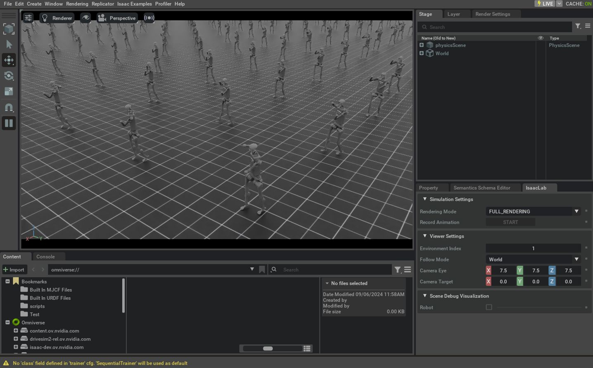

前面的教程介绍了如何创建 Direct Workflow RL Environment、注册 Task，以及训练 RL Agent。本教程将在这些内容的基础上，修改一个现有 Task。
当目标与已有示例差异较大时，可能需要从头实现 Task；如果差异较小，则可以复制现有实现并只修改必要部分，从而减少重复工作。
本教程将修改 Direct Workflow Humanoid Task，把原有 Humanoid 模型替换为 Unitree H1 Robot，同时保持原始 Task 逻辑不变。
1 基本代码
本教程以 isaaclab_tasks.direct.humanoid Module 中的 Direct Workflow Humanoid Environment 为基础。
代码 humanoid_env.py
# Copyright (c) 2022-2026, The Isaac Lab Project Developers (https://github.com/isaac-sim/IsaacLab/blob/main/CONTRIBUTORS.md).
# All rights reserved.
#
# SPDX-License-Identifier: BSD-3-Clause
from __future__ import annotations
import isaaclab.sim as sim_utils
from isaaclab.assets import ArticulationCfg
from isaaclab.envs import DirectRLEnvCfg
from isaaclab.scene import InteractiveSceneCfg
from isaaclab.sim import SimulationCfg
from isaaclab.terrains import TerrainImporterCfg
from isaaclab.utils import configclass
from isaaclab_tasks.direct.locomotion.locomotion_env import LocomotionEnv
from isaaclab_assets import HUMANOID_CFG
@configclass
class HumanoidEnvCfg(DirectRLEnvCfg):
# env
episode_length_s = 15.0
decimation = 2
action_scale = 1.0
action_space = 21
observation_space = 75
state_space = 0
# simulation
sim: SimulationCfg = SimulationCfg(dt=1 / 120, render_interval=decimation)
terrain = TerrainImporterCfg(
prim_path="/World/ground",
terrain_type="plane",
collision_group=-1,
physics_material=sim_utils.RigidBodyMaterialCfg(
friction_combine_mode="average",
restitution_combine_mode="average",
static_friction=1.0,
dynamic_friction=1.0,
restitution=0.0,
),
debug_vis=False,
)
# scene
scene: InteractiveSceneCfg = InteractiveSceneCfg(
num_envs=4096, env_spacing=4.0, replicate_physics=True, clone_in_fabric=True
)
# robot
robot: ArticulationCfg = HUMANOID_CFG.replace(prim_path="/World/envs/env_.*/Robot")
joint_gears: list = [
67.5000, # lower_waist
67.5000, # lower_waist
67.5000, # right_upper_arm
67.5000, # right_upper_arm
67.5000, # left_upper_arm
67.5000, # left_upper_arm
67.5000, # pelvis
45.0000, # right_lower_arm
45.0000, # left_lower_arm
45.0000, # right_thigh: x
135.0000, # right_thigh: y
45.0000, # right_thigh: z
45.0000, # left_thigh: x
135.0000, # left_thigh: y
45.0000, # left_thigh: z
90.0000, # right_knee
90.0000, # left_knee
22.5, # right_foot
22.5, # right_foot
22.5, # left_foot
22.5, # left_foot
]
heading_weight: float = 0.5
up_weight: float = 0.1
energy_cost_scale: float = 0.05
actions_cost_scale: float = 0.01
alive_reward_scale: float = 2.0
dof_vel_scale: float = 0.1
death_cost: float = -1.0
termination_height: float = 0.8
angular_velocity_scale: float = 0.25
contact_force_scale: float = 0.01
class HumanoidEnv(LocomotionEnv):
cfg: HumanoidEnvCfg
def __init__(self, cfg: HumanoidEnvCfg, render_mode: str | None = None, **kwargs):
super().__init__(cfg, render_mode, **kwargs)
2 修改说明
2.1 复制文件并注册新的 Task
为避免修改现有 Task，先复制其 Python 实现。在 Isaac Lab Project 的 source/isaaclab_tasks/isaaclab_tasks/direct/humanoid 目录中，将 humanoid_env.py 复制并重命名为 h1_env.py。
用代码编辑器打开 h1_env.py，将 HumanoidEnv 和 HumanoidEnvCfg 分别重命名为 H1Env 和 H1EnvCfg，避免注册新 Environment 时发生导入名称冲突。
然后修改同一目录中的 __init__.py，添加注册项，将新 Task 注册为 Isaac-H1-Direct-v0。Environment 注册机制详见“注册 Environment”教程。
暗示
如果 Task 中的变化很小，则很可能可以使用相同的 RL Library Agent Configurations 来成功训练它。
否则，建议创建新的 Configuration 文件（在注册期间调整其名称） kwargs Parameter)
以避免更改原始 Configurations。
from .h1_env import H1Env, H1EnvCfg
gym.register(
id="Isaac-H1-Direct-v0",
entry_point="isaaclab_tasks.direct.humanoid:H1Env",
disable_env_checker=True,
kwargs={
"env_cfg_entry_point": H1EnvCfg,
"rl_games_cfg_entry_point": f"{agents.__name__}:rl_games_ppo_cfg.yaml",
"rsl_rl_cfg_entry_point": f"{agents.__name__}.rsl_rl_ppo_cfg:HumanoidPPORunnerCfg",
"skrl_cfg_entry_point": f"{agents.__name__}:skrl_ppo_cfg.yaml",
},
)
2.2 更改 Robot
新文件中的 H1EnvCfg 封装 Environment Configuration，包括需要实例化的 Asset；其中 robot 属性保存目标 Articulation Configuration。
Unitree H1 已包含在 Isaac Lab Assets Extension（isaaclab_assets）中，因此可以直接导入并替换 H1EnvCfg.robot。还需要修改 joint_gears，因为其中保存的是 Robot 专属配置。
暗示
如果目标 Robot 未包含在 Isaac Lab Assets Extension 中，则可以从 USD 文件加载和配置它，
通过使用 ArticulationCfg Class。
请参阅 艾萨克-弗兰卡-内阁-直接-v0 Source Code 有关从 USD 文件加载和配置 Robot 的示例。
请参阅 导入新的 Asset 有关如何从 URDF 或 MJCF 文件以及其他格式导入 Asset 的详细信息的教程。
from isaaclab_assets import H1_CFG
robot: ArticulationCfg = H1_CFG.replace(prim_path="/World/envs/env_.*/Robot")
joint_gears: list = [
50.0, # left_hip_yaw
50.0, # right_hip_yaw
50.0, # torso
50.0, # left_hip_roll
50.0, # right_hip_roll
50.0, # left_shoulder_pitch
50.0, # right_shoulder_pitch
50.0, # left_hip_pitch
50.0, # right_hip_pitch
50.0, # left_shoulder_roll
50.0, # right_shoulder_roll
50.0, # left_knee
50.0, # right_knee
50.0, # left_shoulder_yaw
50.0, # right_shoulder_yaw
50.0, # left_ankle
50.0, # right_ankle
50.0, # left_elbow
50.0, # right_elbow
]
更换 Robot 后，受控关节数量和 Articulation 中的 Rigid Body 数量可能发生变化。因此还需按新 Robot 调整其他 Environment Configuration，例如 Observation Space 和 Action Space 的维度。
action_space = 19
observation_space = 69
3 代码执行
完成小修改后，与之前的教程类似，我们可以使用可用的 RL Workflows 之一对 Task 进行训练，例如 Task。
./isaaclab.sh -p scripts/reinforcement_learning/rl_games/train.py --task Isaac-H1-Direct-v0 --headless
训练完成后，我们可以使用以下 Command 可视化结果。
要停止 Simulation，您可以关闭窗口，或按 Ctrl+C 在 Terminal 中
您开始 Simulation 的位置。
./isaaclab.sh -p scripts/reinforcement_learning/rl_games/play.py --task Isaac-H1-Direct-v0 --num_envs 64

在本教程中，我们学习了如何在不影响原始代码的情况下对现有 Environment 进行细微修改。
然而，重要的是要注意，虽然要做的改变可能很小，但它们可能并不总是在第一次尝试时起作用， 因为正在修改的 Environment 中可能对原始 Assets 存在更深层次的依赖。 在这些情况下，建议详细分析可用示例的代码，以便做出适当的调整。